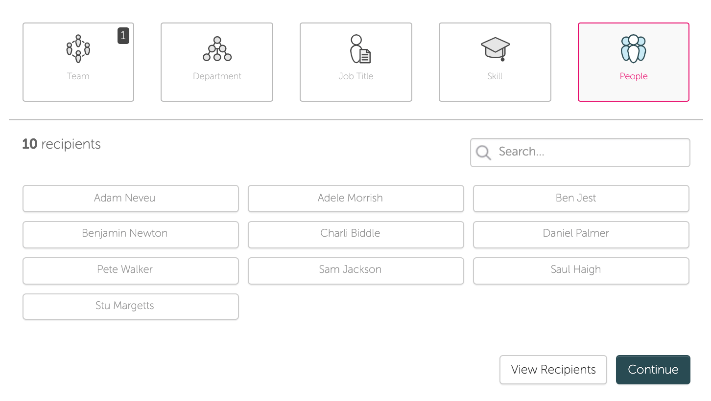

The gist
While catching up with our customer success team, they reported problems managers had with administrating broadcasts. Sending content out was simple to do but lacked any depth and involved a lot of repetition. We focussed on improving this experience by delivering an MVP that would include audience building and administration of content. We included a wealth of quality of life improvements and would see the managers save a great deal of time.
Skills used
Research and analysis, Sketch, InVision

Choosing the audience involved picking from a list. Rather unintuitive.